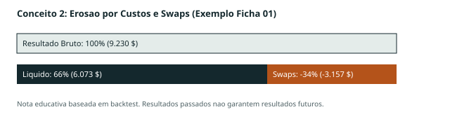
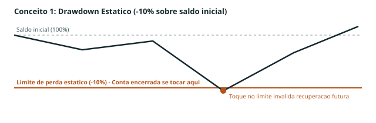

Avaliacao da regra generica da familia Donchian (rompimento de maximos/minimos de canal com gestao de risco, sem divulgar parametrizacoes proprietarias). Com teto de 1,0% de risco aberto (maximo 2 posicoes), a amostra tem 226 trades (189 pos-Julho 2024). O intervalo de confianca de 95% da expectancia [-12,99 $; +51,73 $] inclui zero.
| Cenario (24 meses) | Conversao LIVE | Sem Payout | Sem Top 2 Ganhos |
|---|---|---|---|
| Amostra Completa (N=226) | 50,6% | 42,1% | 15,6% (15,1% centrado) |
| Pos-Julho 2024 (N=189) | 39,4% | 52,2% | 9,7% |
| Linha de Base Sem Vantagem (Media=0) | 18,9% a 19,2% | 72,4% a 73,0% | — |
Antes de avaliar qualquer entrada, percebe como os custos e os limites de perda afetam a sobrevivencia da conta:

